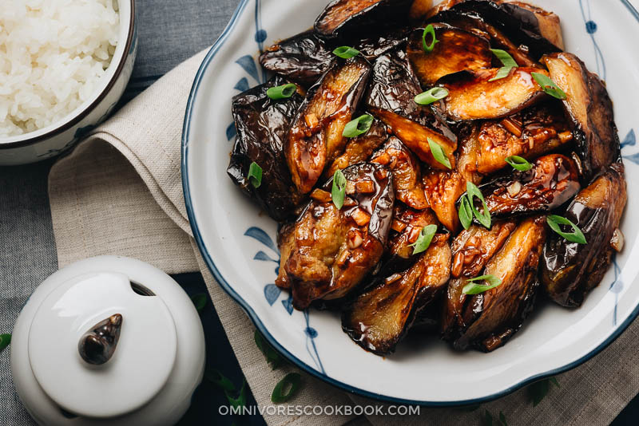

Garlic Eggplant

Description
This is the most garlicy and delicious eggplant you will ever consume!
This is a simple and efficient eastern delicacy beloved by all around the world!
Ingredients
eggplant
garlic
soy sauce
sugar
salt
Steps
- mince garlic and combine liquids
- over high heat, add in garlic, sauce, and eggplant
- stir for 10 minutes until sauce thickens
- remove from heat and enjoy!